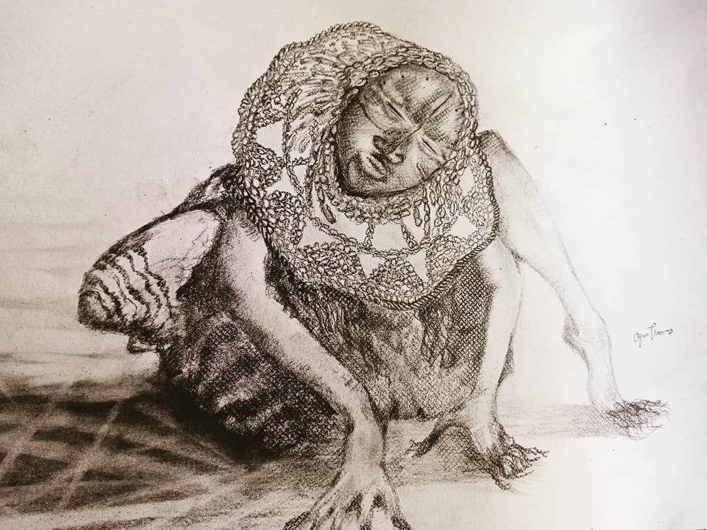

Study in Rest and Presence
Graphite and pencil on paper
Works on Paper
A collection of 51 graphite and pencil studies exploring spirituality, identity and the emotional presence of the human figure.

Graphite and pencil on paper
The complete 51-work archive will be added here when the artwork collection is supplied.